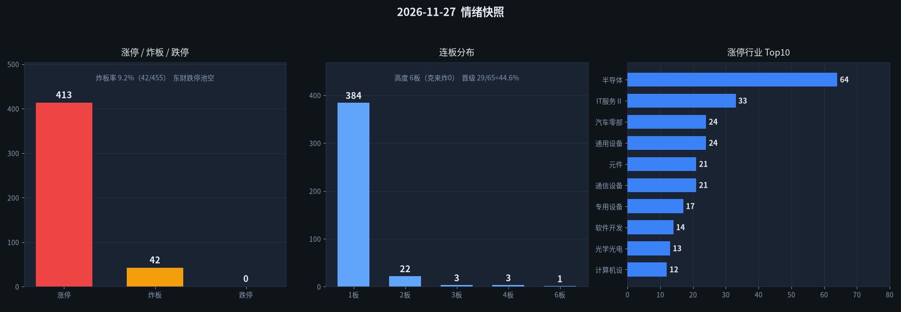

交易日 2026-11-27（周五） · 目标交易日 2026-11-30（周一） · 启动偏强·算力中军涨停
情绪：启动（强） 涨停 413 · 跌停约 0 炸板率 9.2% · 晋级率 44.6% · 高度 6板| 票 | 昨动作 | 今收盘涨跌幅 | 判定 |
|---|---|---|---|
| 全市场 | 空仓观望 | 上证 +3.73%、创业 +11.61%、中证1000 +8.15%、科创50 +15.07%；涨停 65→413，跌停 4→约0 | 错 |
| 克来 / 解百 / 利君 / 天圣 / 中京 / 九阳等残留高度 | 不加 | 克来晋级 6板 +10.02%（额13.28，炸0）；利君/天圣/全筑晋级 4板；解百 +3.70% 断；中京炸板 +9.72%（额44.39）；九阳 +0.60%；盛剑 +5.35%；青山 −2.17%；东方海洋 −9.01% | 部分对 |
| 冰山冷热 / 崇达技术 | 只观察，高开＞3%放弃 | 冰山开 +4.39% 收 −4.45%（额43.70）；崇达开 +4.13% 收 +10.03% 晋级 2板（额35.12，炸3） | 对 |
| 金牛 / 好当家 / 襄阳 / 汽车与算力中军 | 只观察不加 | 金牛 +4.77%、好当家 −4.04%、襄阳 −6.06%；拓普 +9.89%、新泉 +9.66% 未封；沪电/深南/景旺/瑞芯微涨停，新易盛 +20.00%，旭创 +19.98%（未进官方池） | 部分对 |
| 跌停、断板反抽、午后脏回封 | 不加 | 华东重机 −4.70%；信息发展 +13.33%；旋极/拓维晋级 2板 | 部分对 |
总结：空仓错过系统性启动，是今天最大的错。高开＞3%放弃冰山为对（高开低走）。不接力解百、不抄青山/东方海洋/九阳为对。算力中军从「温和修复」一天切到集体涨停，昨天把中军观察线设得过严。
改进：1）修复初期次日，若竞价平稳且中军平开转强，应允许把中军观察线升级为极轻试错，而不是一刀切不加（未回测）；2）高开＞3%放弃规则对冰山有效，继续保留（未回测）。
启动（强）。跌停近乎消失（东财池 0，乐咕真实跌停 1），红盘 32.0%→96.7%，活跃度 32.22%→96.19%，赚钱效应全面打开。涨停 65→413 大幅跳升，晋级 29/65=44.6% 明显改善，炸板率 30.9%→9.2% 骤降。指数平开后单边上行（上证+3.73%、创业+11.61%、中证1000+8.15%、科创50+15.07%），两市成交放量至约 2.00 万亿。主线清楚：半导体 / 光模块 / PCB 中军集体涨停或贴近涨停。连板高度虽到 6 板，但是克来机电（额仅 13.28 亿），不是主线空间龙；384 只是首板，属于广度爆发、高度一般。涨停数量和红盘已接近高潮，所以定性为启动偏强，不是修复，也还不到持续主升。周一首先防追高分化，不把今天的普涨当成可以随便加仓的高潮确认。

图：涨停 / 炸板 / 跌停、连板分布、涨停行业 Top10（东财清洁池）
| 指标 | 今日 | 昨日 | 变化 |
|---|---|---|---|
| 涨停（清洁） | 413 | 65 | +348 |
| 跌停（清洁） | 0（东财池空；乐咕真实跌停 1） | 4 | 近乎清零 |
| 炸板 | 42 | 29 | +13 |
| 炸板率 | 9.2%（42/455） | 30.9%（29/94） | 明显下降 |
| 连板高度 | 6板（克来机电，炸0，末封13:10，额13.28亿） | 5板（克来炸3，额13.05亿） | 昨高标晋级，额仍然偏小 |
| 昨涨停晋级率 | 29/65=44.6% | 14/51=27.5% | 明显改善 |
| 昨涨停炸板 / 改跌停 | 炸2、跌停0 | 炸3、跌停0 | 昨涨停几乎没有被砸死 |
| 红盘占比 | 96.7%（上涨5204 / 下跌168 / 平盘12，合计5384） | 32.0% | 广度接近满红 |
| 两市成交额 | 约19998亿（上证9298 + 深成10700） | 约13174亿 | 放量约6824亿 |
| 涨停 / 炸板 / 跌停池额 | 4527.7 / 251.1 / 0 亿 | 488.8 / 318.0 / 8.3 亿 | 涨停额暴增，炸板额下降 |
连板分布：1板 384、2板 22、3板 3、4板 3、6板 1（无5板）。涨停 raw417→clean413（剔北交所汉鑫科技920092、艾融软件920799、腾信精密920298、华信永道920592）；炸板 raw42→clean42，无需再剔 ST/北交所。东财跌停池官方 tc=0 为空；乐咕跌停 1 / 真实跌停 1，涨跌分布 −10 档 2 家、−11 档 0，作口径缺口。中际旭创收盘 +19.98%（额333.97亿）、天孚通信 +19.80%（额137.26亿），均未进东财涨停/炸板池，不计入官方涨停和晋级。乐咕上涨5025/下跌181/平盘13，活跃度96.19%，涨停435/真实涨停425，口径略异已并存注明。
今天钱集中在 半导体 / 光模块 / PCB 元件，中军同步，是近两周第一次出现干净主线。
空间龙：无。趋势龙 / 中军：半导体 + 光模块 + PCB。高度杂毛与辅线分开看，都不升级成主仓。
情绪 = 启动（强，普涨接近高潮） → 专项总仓上限建议 ≤8%（未回测）；同时持仓建议 0–1 只。默认不追高；仅当竞价平稳时，才允许在相对干净的算力中军里极轻试错 1 只。不追新易盛 / 旭创 20cm，不接力克来 6 板与天圣脏 4 板，不抄冰山断板，不追宇树尾盘炸板。
指令1｜深南电路 / 北方华创 / 生益科技 / 景旺电子
条件开多| 代码 | 002916 深南电路；002371 北方华创；600183 生益科技；603228 景旺电子 |
|---|---|
| 进场 | 竞价平开～小高开 ≤3%，开盘后守住或弱转强才极轻试错。高开 |
| 止损 | 炸板不回封，或竞价弱开后继续砸、半小时内走势明显弱于板块，则离场。 |
| 目标 | 分歧减，不预期连板空间（中军首板次日容易分化）。 |
| 仓位 | ≤8%、只做 1 只（未回测） |
| 原因 | 半导体 / 光模块 / PCB 今天是主线，中军已经同步；这四只相对更干净，适合作为周一唯一试错线。 |
| 作废 | 竞价高开＞3% 或一字；中军低开砸盘；高度断板扩散或炸板率重新飙升（回到空仓，未回测）。 |
指令2｜新易盛 / 中际旭创 / 天孚通信 / 沪电股份 / 中微公司
只观察 / 不追| 代码 | 300502 新易盛；300308 中际旭创；300394 天孚通信；002463 沪电股份；688012 中微公司 |
|---|---|
| 进场 | 无开仓。只记录竞价强弱。高开＞3% 或一字直接放弃；即使平开，也不在开盘去追 20cm 或尾盘回封的大额票。 |
| 仓位 | 0%（未回测） |
| 原因 | 新易盛 20cm 额 269 亿但 14:47 才封；旭创 / 天孚贴近 20cm 却未进官方池；沪电炸 4，中微 15:00 回封。这些票周一高开或分化的概率都高，不是轻仓试错的对象。 |
| 作废 | —（升级条件只走指令1，未回测） |
指令3｜残留高度
不加| 代码 | 603960 克来机电；002872 天圣制药；002651 利君股份；603030 全筑股份；600280 中央商场；002197 证通电子 |
|---|---|
| 动作 | 不加（不接力克来 6 板，不接地天圣炸 8 的 4 板，不接利君/全筑小额 4 板，不接中央商场尾盘 3 板） |
| 仓位 | 0% |
| 原因 | 高度要么额小、要么反复炸板，而且和今天的算力主线不是一条线，不是空间龙。 |
指令4｜崇达技术及脏 2 板
不加| 代码 | 002815 崇达技术；300324 旋极信息；002261 拓维信息；002081 金螳螂；002077 大港股份 |
|---|---|
| 动作 | 不加（不接力崇达炸 3 的 2 板，不追昨午后脏回封今天才晋级的旋极/拓维，不追大港炸 5） |
| 仓位 | 0% |
| 原因 | 崇达虽在元件主线，但昨天已经高开过、今天又炸 3；其余 2 板质量更差，不适合在普涨次日去接力。 |
指令5｜断板、高开失败、尾盘炸板
不加 / 不抄底| 代码 | 000530 冰山冷热、000678 襄阳轴承、600467 好当家、002086 东方海洋、600103 青山纸业；688836 宇树科技、002579 中京电子、002242 九阳股份 |
|---|---|
| 动作 | 不加 / 不抄底（不抄冰山高开失败，不抄襄阳/东方海洋/好当家，不追宇树尾盘炸板 20cm，不追中京尾盘炸板） |
| 仓位 | 0% |
| 原因 | 启动日同样会留下高开低走和尾盘偷鸡；普涨次日抄这些，容易接到分化的第一刀。 |